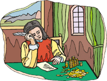

|  |
�����The second half of a famous "Mother Goose" nursery rhyme goes something like this:
The King was in the counting-house,
Counting out his money,
The Queen was in the parlour,
Eating bread and honey,
The maid was in the garden,
Hanging out the clothes,
When down came a little bird
And snapped off her nose!
�����Now, I have no particular interest in the affairs of those two ladies. As the king's Royal Mathematician, however, I do have a curiosity about how much money he was counting.
�����So I went to His Highness to inquire.
�����His reply to my question as to how many gold coins he had on His counting table was rather unexpected. He said:
�����"If I put all my coins in stacks of 25 each, I have 15 coins left over in another, shorter stack. If I then put them in stacks of 35 each, I still have 15 left over, just as before. But if I put them in stacks of 45, there are no coins left over. It comes out just right!"
�����Well, my friends, I'm not called the Royal Mathematician for nothing. I took out my quill, ink bottle and a piece of parchment, and set to work. In no time at all, I knew just how many gold coins the King had.
�����To answer this problem, tell me the number of stacks of coins the King had in His first counting method.
�����Remember: define your variables carefully, set up good equations, and use algebraic thinking. (And remember; there were no calculators nor computers in the King's time!)
�����BONUS: How does the first half of this famous rhyme go?
NOTE: Before writing out your answer, please check our Guide lines for Writing POW Answers.
| Comments? Send e-mail. | Back to top | Go back to Home Page | Go back to Contents |